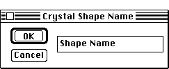

Distributed By: Virtual Labs
Add To Library Dialog Box
PATH...Parameter Menu:Crystal Shape:Desired Crystal::(Add to Library)
This dialog, which can only be accessed through the Crystal
Shape Dialog Box, allows the user to add the currently defined crystal
shape to a crystal shape library. This library is stored in the Desktop
Microscopist Preference file.

Crystal Naming Dialog Box
The stored data includes only the list of plane faces and not the number
of planes the crystal was from the origin. This keeps the total number of
crystal shapes to a reasonable but useful minimum.
Author: J.ames T.
Stanley
 Desktop
Manual:Dialog Boxes
Desktop
Manual:Dialog Boxes
Distributed By: Virtual Labs
Last Updated:1/12/96 Sat, Apr 27, 1996